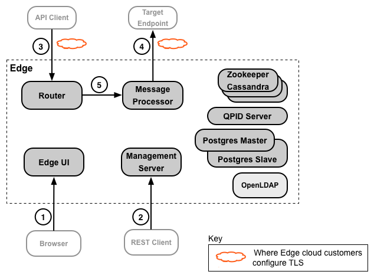
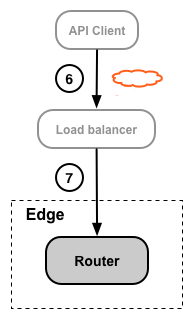
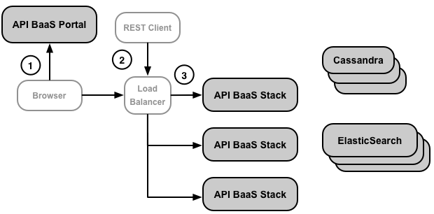
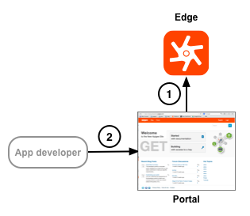

[toc]
Apigee Edge has several entry points that you might want to secure with TLS. In addition, Edge add-ons, such as the Developer Services portal, have entry points that can be configured to use TLS.
The Edge TLS configuration procedure depends on how you deployed Edge: Apigee Edge cloud or Apigee Edge for Private Cloud.
A cloud-based deployment of Edge means that most of the TLS configuration is handled by Apigee. You are only responsible for providing Apigee with a valid TLS certificate and private key. Apigee then handles the configuration required for TLS access.
The one area where Apigee cannot completely configure TLS is when you use two-way TLS between Edge and your backend service. In this situation, either you or Apigee have to handle the TLS configuration on Edge, and you must make sure to configure TLS correctly on your backend servers.
For the cloud version of the Developer Services portal, you configure TLS on on the Pantheon hosting server.
For more, see http://docs.apigee.com/node/18071.
For an Apigee Edge for Private Cloud installation of the Developer Services portal, you are completely responsible for configuring TLS. That means you not only have to obtain the TLS certificate and private key, but you also have to configure Edge to use TLS.
For more, see http://docs.apigee.com/node/18076.
The following images shows the places in an Edge installation where you can configure TLS:

Most of the connections between the Edge components have been omitted to simplify this image.
Apigee Edge for Private Cloud customers typically configure all connections to use TLS. However, for cloud customers, Apigee handles most of the TLS configuration for you and only have to configure TLS for connections 3 and 4 shown in the figure.
The following table describes these TLS connections:
|
Source |
Destination |
Description |
|
|---|---|---|---|
|
1 |
API developer |
Edge management UI |
The Edge management UI is a browser-based tool that API developers use to perform most of the tasks necessary to create, configure, and manage API proxies and API products. |
|
2 |
API Developer |
Edge management API |
All Edge services can be configured through the Edge management API, a REST-based API. That means you can use these APIs to create, configure, and manage API proxies and API products, create and manage apps and app developers, and to perform many other types of operations. |
|
3 |
API Client (app) |
API |
Apps access your APIs by making requests to API proxies through virtual hosts on the Edge Router. |
|
4 |
Edge |
Target endpoint |
An API proxy functions as a mapping of a publicly available endpoint on Edge to a target endpoint, which is often defined by an endpoint on your backend service. The Edge Message Processor accesses your backend service in response to a request to an API proxy. |
|
5 |
Router |
Message Processor |
A Router handles all Edge incoming API traffic, determines the API proxy that handles the request, balances requests across available Message Processors, and dispatches the request. |
The following image shows a scenario where the API client accesses Edge through a load balancer, rather than accessing the Router directly:

The cloud-based version of Edge is typically configured to use a load balancer. For Private Cloud installations, the presence of a load balancer is dependent on your network configuration of Edge.
Load balancers often cannot be configured to support two-way TLS.
When using a load balancer, you can configure TLS between the API client and the load balancer and, if necessary, between the load balancer and the Router, as the following table describes:
|
Source |
Destination |
Description |
|
|---|---|---|---|
|
6 |
API Client (app) |
Load Balancer |
Apps access your APIs by making requests to API proxies through a load balancer. The load balancer forwards the request to an Edge Router. You can configure TLS on the entry point of the load balancer. The way you configure TLS is based on the load balancer. |
|
7 |
Load Balancer |
Router |
Depending on your configuration, you might configure TLS access to the Router from the load balancer. In that case, you configure TLS just as if the load balancer was not present. Or, if the load balancer and Router are in the same security domain, TLS configuration may not be necessary. However, that is dependent on your network configuration. |
The following image shows the places where API BaaS uses TLS:

The following table describes these TLS connections:
|
Source |
Destination |
Description |
|
|---|---|---|---|
|
1 |
Browser |
BaaS Portal |
The BaaS Portal is a browser-based tool that developers use to create apps, add and configure users, add and update collections, and perform many other tasks. |
|
2 |
BaaS Portal and BaaS API |
Load Balancer |
A production installation of BaaS typically uses a load balancer in front of the BaaS Stack nodes. The Portal running in a Browser and the BaaS API then make TLS requests to the Stack nodes through the load balancer. |
|
3 |
Load Balancer |
BaaS Stack |
Configure TLS on the BaaS Stack nodes. You can configure TLS on the Stack nodes even if you do not have a load balancer. |
The following image show the two places where the portal uses TLS:

Apigee Edge for Private Cloud and Edge cloud customers configure TLS on both connections. The following table describes these connections in more detail:
|
Source |
Destination |
Description |
|
|---|---|---|---|
|
1 |
Portal |
Edge management API |
The portal does not function as a stand-alone system. Instead, much of the information used by the portal is actually stored on Edge, where Edge can be deployed either in the cloud or Edge for Private Cloud. The portal acts as the TLS client in this scenario by making requests to the Edge management API. As the TLS server, it is up to Edge to configure TLS. |
|
2 |
App developers |
Portal |
Developers log in to the portal to register apps and receive API keys. Because the connection requires the developer to pass login credentials, and for the portal to send app keys, it should be configured to use TLS. |
For more information on configuring TLS for the cloud-based version and the Apigee Edge for Private Cloud version of the portal, see http://docs.apigee.com/node/15391.